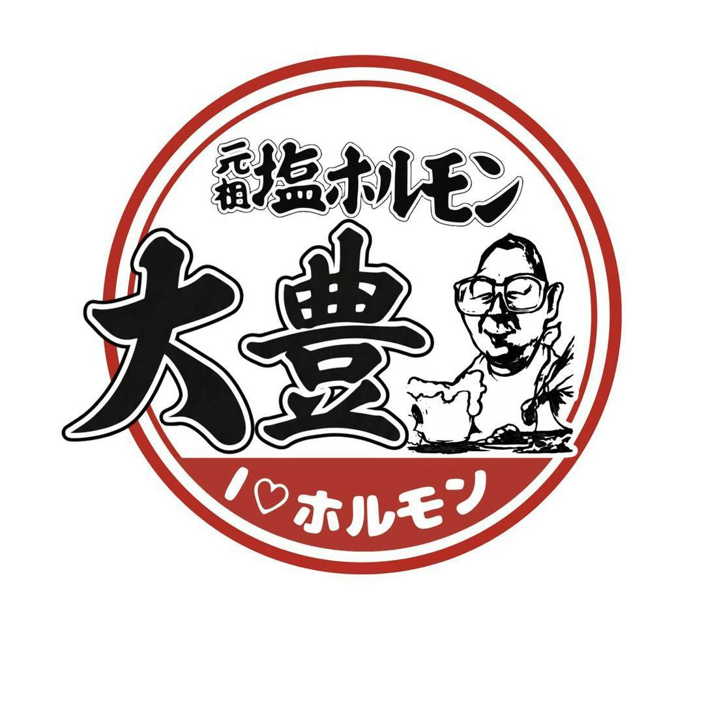

郡山の大町にある、元祖塩ホルモン大豊。
昭和な社長とママが営む焼肉屋です。
地元民から観光客まで多くの人々を虜にしてきた人情あふれるお店で、最高の焼肉をどうぞお召し上がりください。

元祖塩ホルモン大豊郡山の大町にある、元祖塩ホルモン大豊。
昭和な社長とママが営む焼肉屋です。
地元民から観光客まで多くの人々を虜にしてきた人情あふれるお店で、最高の焼肉をどうぞお召し上がりください。
お問い合わせはお電話で。
024-933-8650 ☎※ご予約は３名様から受け付けております。